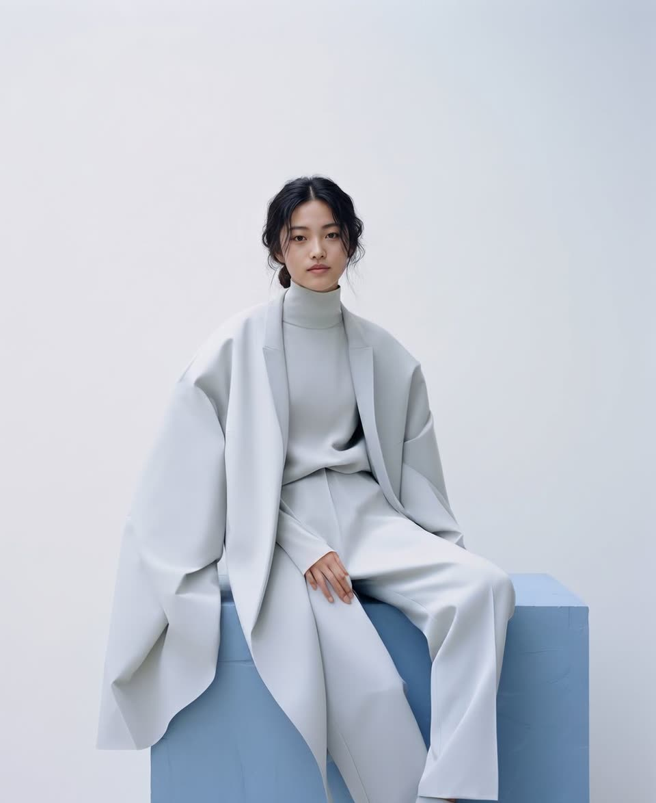

Minimalist Architectural Fashion Portrait
WRD-006WardrobeNano Banana Proby 𝑨𝒇𝒓𝒊𝒏September

A structured, minimalist fashion portrait of an East Asian woman in an oversized ice-grey ensemble.
Prompt
A high-resolution, minimalist fashion portrait photograph featuring an {argument name="ethnicity" default="East Asian woman"} with a calm, direct gaze. Her dark hair is styled in a very sleek, center-parted, tight low bun. She is sitting with a poised, structured pose on a large, textured geometric plinth painted a soft, {argument name="plinth color" default="pale powder blue"}.
Outfit Details: The woman is wearing a striking, monochromatic, oversized ensemble in a de-saturated, {argument name="outfit color" default="light grey"} color (appearing like ice-grey or light celadon). The outfit consists of three main pieces:
A dramatically oversized, collarless wrap-front cape-coat with wide, fluid sleeves and an undulating hemline, which drapes extensively over her and the blue plinth.
Underneath the coat, a matching light grey, high-neck turtleneck knit top.
Matching high-waisted, wide-leg trousers that pooling slightly at the ankles, made from a similar heavy drape fabric.
Pose and Composition: She is seated comfortably but formally, hands lightly resting in her lap and on the surface of the blue cube. The composition is a centered, three-quarter length shot.
Setting and Lighting: The background is a clean, seamless, off-white studio wall. The lighting is soft, diffused, high-key studio lighting, creating a cool and clean atmosphere with minimal, soft shadows, emphasizing the architectural lines and textures of the garments. The overall feel is modern, elegant, and editorial. The perspective is eye-level.Tags: 35mm film, fashion, portrait